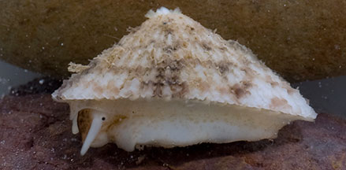
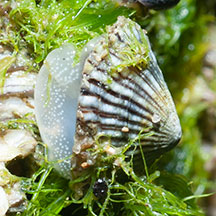
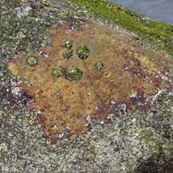
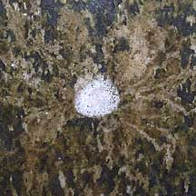
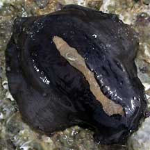

|
|
| shelled snails text index | photo index |
| Phylum Mollusca > Class Gastropoda |
| Limpets updated Aug 2020
Where seen? Limpets are found many of our shores. Both on and under stones, as well as on rocks and other hard surfaces. Sometimes the shell is covered with algae and mud and the limpet might look like a sea slug. Immobile at low tide, these abundant snails are often considered uninteresting and ignored by visitors. But they are actually quite amazing little creatures. Features: 'Limpets' are molluscs with an uncoiled, umbrella-shaped shell, often with ribs. They are gastropods, and like the snails more familiar to us, also have a broad foot upon which they creep about. Unlike snails, however, limpets don't have an operculum to seal the opening in their shell. Instead, they clamp down tightly against the rock, forming a seal between the shell edge and the rock. Their grip is so strong that if you try to pry them off, you will hurt them. So please don't do this. If you want to see what the limpet looks like under its shell, have a look at the factsheets instead. Sometimes confused with barnacles which are crustacea; small oysters (Family Ostreidae) which are bivalves; and slipper snails (Family Calyptraeidae) which are another kind of gastropod. Unlike limpets, all these other animals cannot move around. More on how to tell apart shelled animals found on rocks. Limpets can move! Unlike the immobile barnacles, limpets can move around. Like most other snails, limpets have tentacles, a broad foot and a radula. The limpet's broad foot firmly grips the rock to avoid being dislodged by waves or predators. |
 A limpet is a snail with an umbrella shaped shell. Pulau Tekukor, Apr 13 |
 East Coast Park, Aug 12 |
| What
do they eat? Most limpets graze the thin layer of tiny
plants and animals that coat a rock. In fact, to find limpets, look
out for a 'bare' patch of rock! They feed at high tide. At
low tide, you may see some grazing at night or when it is cool or
wet. Those found in shallow tide pools may also continue to feed at
low tide. Home on the Rock: Some species of limpets have a strong homing instinct and move back to the same resting spot after a feeding bout. This spot is often a slight depression in the rock which fits the outline of the shell perfectly, and is called the 'home scar'. The limpet creates this perfect spot by rubbing against the rock, wearing away the shell and/or the rock so that a perfect fit is created! Even as the limpet grows bigger. Sometimes, you might come across a spot on a rock in the shape of a limpet that is completely 'clean' with feeding trails leading from the home scar. This could be the home scar of a limpet that has recently come to an unhappy end. Among the animals that prey on limpets are drill snails. Some limpets are believed to follow their mucus trails back to the home scar. In some of these homing limpets, their mucus also stimulates the growth of algae! |
 Limpets in the middle of a well-grazed portion of a boulder. Chek Jawa, May 04 |
 Home scar of recently demised limpet. Tuas, Apr 05 |
 Drill snail drilled a hole in the limpet shell. St. John's Island, Sep 07 Photo shared by Marcus Ng on flickr. |
| What
are limpets? Two major groups of snails have umbrella-shaped
shells. They come from quite separate groups and are not closely related. One group of limpets called True limpets breathe through gills. Some, like those of the Family Patellidae and Lottiidae do not have holes in their shells. The Family Fissurellidae includes the Keyhole limpets which have a hole at the tip of their conical shells. Water is sucked in from under the shell, passes over the two feathery gills, and is then expelled out of the hole in the shell. To avoid water loss through this hole, these limpets live in wetter places. Another member of the Family Fissurellidae are the Shield-limpets (Scutus sp.). Their bodies are a lot larger than their shell. In fact, the shell might be completely covered by their mantle, making them appear to be slugs. A Shield-limpet's body usually folds up around the edges of the shell and may cover most of the shell. They come in various colours. Their body may be black or beige, and shell white or brown. These limpets are commonly found under rocks on our shores. Another group of limpets have lungs and breathe air. False limpets (Family Siphonariidae) belong to this group and are closely related to land snails and to Onch slugs (Family Onchidiidae). They have a lung that can be filled with air or seawater. Because they can breathe air, false limpets are often found higher up on the rocks than limpets that breathe through gills. They lay jelly-like egg masses on the rocks. More on how to tell apart the various kinds of limpets. |
 A True limpet, this Smooth limpet breathes through gills. Chek Jawa, Jan 05 |
 A False limpet, this Guam false limpet, breathes through lungs. Sisters Island, Nov 05 |
 Often mistaken for a slug, the Hoof-shield limpet has a body much bigger than its shell! Chek Jawa, Jul 02 |
| Limpet Babies: Siphonaria limpets lay eggs in circular or coiling jelly-like masses that contain thousands of eggs suspended in a gelatinous matrix, attached to a hard surface. The free-swimming limpet larvae have a little spiral shell like other 'normal' snails. As they develop, the shell flattens and becomes umbrella-shaped. |
 With egg masses? East Coast Park, Aug 11 |
 East Coast Park, Aug 11 |
|
| Human uses: Large limpets are often harvested as food by
coastal dwellers. Status and threats: None of our limpets are listed among the threatened animals of Singapore. However, like other creatures of the intertidal zone, they are affected by human activities such as reclamation and pollution. Over-collection can also have an impact on local populations. |
| Limpets on Singapore shores |


| Limpets
recorded for Singapore from Tan Siong Kiat and Henrietta P. M. Woo, 2010 Preliminary Checklist of The Molluscs of Singapore. in red are those listed among the threatened animals of Singapore from Davison, G.W. H. and P. K. L. Ng and Ho Hua Chew, 2008. The Singapore Red Data Book: Threatened plants and animals of Singapore. ^from WORMS +Other additions (Singapore Biodiversity Record, etc) True limpets
False limpets
|
Links
References
|